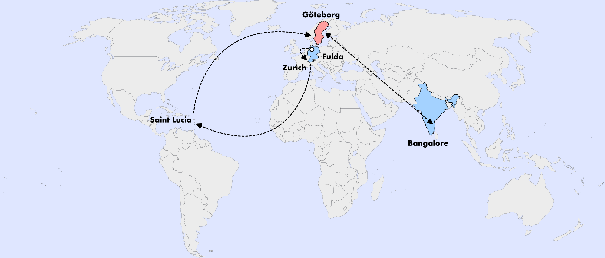

Research assistant at University of Gothenburg
I'm a research assistant at the University of Gothenburg exploring the intersection of climate change and global health. Using data-driven approaches, I focus on understanding impacts on vulnerable populations. Explore my work below!
Correlation between heat exposure and perinatal depression—A spatial case-crossover study from Bangladesh, Lesotho, Mozambique, and Nepal.
Science of The Total Environment, 1022, 181601.
Read PaperExploring local views on strengths and challenges in pre-service education for skilled birth attendants, skilled health professionals, and midwives in Nepal.
Nature Health (Accepted).
Read PreprintCareer path across continents
